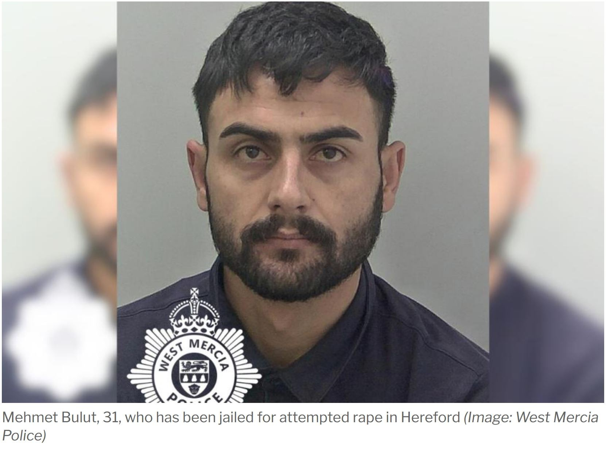

FAILED ASYLUM SEEKER JAILED FOR ATTEMPTED RAPE — WHAT HAPPENED AFTER HIS CLAIM WAS WITHDRAWN?
Mehmet Bulut arrived in Britain by small boat in December 2022. His asylum claim was later withdrawn and he was recorded as an absconder. Years later, he attacked a woman in Hereford. The court has delivered its sentence. Important questions about his immigration history remain unanswered.
Mehmet Bulut, 31, has been sentenced to six years in prison, with a further three years on extended licence, after admitting attempted rape. Worcester Crown Court heard that the attack took place near a subway in Hereford in the early hours of 2 August. The assault was captured on CCTV.
According to reporting from the Hereford Times, prosecutor Simon Phillips told the court that Bulut arrived in the UK on a small boat on Boxing Day 2022. His asylum application was subsequently withdrawn for non-compliance, and he was classified as an absconder.
Those details raise an obvious public-interest question: what, if anything, was done to find him after his claim was withdrawn?
A woman attacked — and lasting consequences
The court heard that Bulut attacked the woman, removed some of her clothing and attempted to rape her. He initially walked away before returning and attacking her again.
Her victim-impact account described serious and continuing consequences. She reported difficulties sleeping, fear of returning to the location and damage to her wellbeing and family relationships. She also questioned whether her own clothing had contributed to the attack.
Responsibility for the attack belongs to the man who committed it. Nothing the woman wore justified his conduct.
Judge Simon Drew KC described the CCTV footage as shocking and the attack as terrifying. He classified Bulut as a dangerous offender. Bulut admitted attempted rape and was made subject to sex offender notification requirements for life.
From a small-boat arrival to an asylum absconder
According to the court report, Bulut entered Britain on 26 December 2022. His asylum claim was later withdrawn because he did not comply with the process. The prosecution described him as an absconder.
What has not been established in the available reporting: when officials last knew his whereabouts, whether attempts were made to locate him, whether he was detained at any point, or whether a removal operation had been planned.
It would be premature to claim that a particular minister, official or agency knowingly allowed him to remain at large. But it is entirely reasonable to ask the Home Office to account for the case's enforcement history.
How was he working in Hereford?
The court heard that police arrested Bulut later on the day of the attack after receiving information that he was working at a Hereford restaurant, Grillology.
That detail raises further questions, but it does not establish that the restaurant knowingly employed someone without permission to work. The available accounts do not identify what right-to-work documents, if any, were presented, or what checks took place.
Those are matters that could be clarified by immigration enforcement records and any subsequent investigation.
What the court decided — and what deportation means
Bulut admitted one count of attempted rape. The judge imposed six years' imprisonment plus three years on extended licence. The judge said it was his understanding that Bulut would face deportation after release.
That reported expectation is not the same as confirmation that a deportation order has already been made or that removal will definitely take place on a particular date. Any immigration decision and its implementation should be reported separately when confirmed.
Five questions the Home Office should answer
- On what date was Bulut's asylum application withdrawn, and when was he formally recorded as an absconder?
- What steps were taken to locate him before the attack?
- Did the authorities have any reliable information about his whereabouts or employment?
- Was he subject to any detention, reporting, removal or deportation action before his arrest?
- What is his current immigration status, and has a deportation order been made following conviction?
These questions do not prejudge the answers. They seek to establish whether the immigration system acted on the information available to it, and whether any identifiable gap in enforcement needs addressing.
The victim must not disappear behind the immigration argument
The immigration issues warrant scrutiny. So does the sentence and the prospect of deportation. But the starting point is the woman who was violently attacked and who told the court that her life had changed.
Her ordeal is not an abstract talking point. The conviction is established; the immigration-enforcement timeline remains incomplete. Both facts matter, and neither should be distorted.
- Hereford Times — Small-boat asylum seeker jailed for attempted rape in Hereford
- Yahoo News — Failed asylum seeker who arrived on small boat jailed over attempted rape
Editorial note: This article relies on the linked court reports. Questions about immigration enforcement are identified as questions, not findings. No claim is made that the restaurant knowingly breached employment law. The photograph below is credited to West Mercia Police as published in the supplied reporting.
